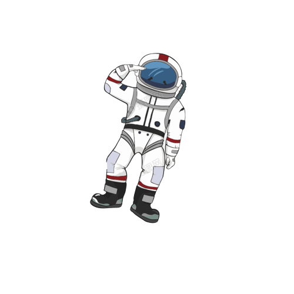
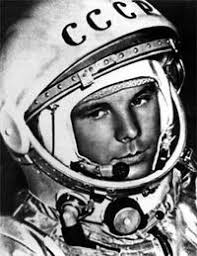
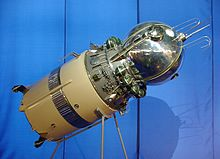
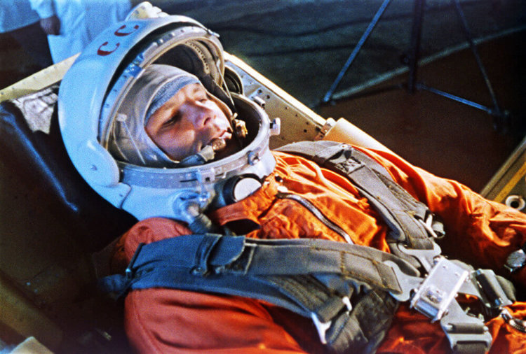
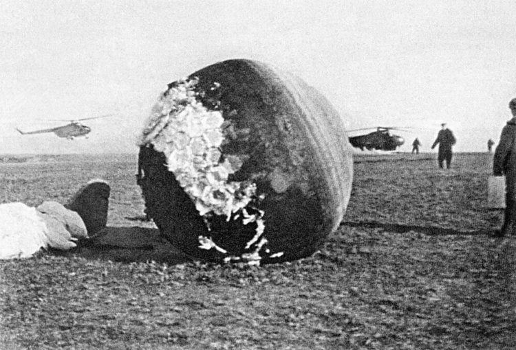

Первый человек в космосе
День космонавтики

Юрий Гагарин тут возведен в культ. Биографию человека, благодаря которому 12 апреля
1961 года был начат отсчет космической эры человечества, здесь знает каждый школьник.
12 апреля 1961 года Юрий Гагарин стал первым человеком в мировой истории, совершившим
полёт в космическое пространство. Ракета-носитель «Восток» с кораблём «Восток-1»,
на борту которого находился Гагарин, была запущена с космодрома Байконур,
расположенного в Кызылординской области Казахстана. После 108 минут полёта Гагарин
успешно приземлился в Саратовской области, неподалёку от Энгельса. 12 апреля 1961 года,
день полёта Юрия Гагарина в космос, был объявлен праздником — Днём космонавтики.

«Восток» — наименование серии советских космических
кораблей, предназначенных для пилотируемых полётов по околоземной орбите. Создавались
ведущим конструктором О. Г. Ивановским под руководством генерального конструктора ОКБ-1
С. П. Королёва с 1958 по 1963 год.
Первый пилотируемый «Восток», запуск которого состоялся 12 апреля 1961 года, стал
первым в мире космическим аппаратом, позволившим осуществить полёт человека в
космическое пространство.
Несмотря на завершение основной программы, модификации базовой конструкции «Востоков»
продолжали использоваться и дальше, и стали основой разнообразных советских и
российских спутников, предназначенных для военной разведки, картографии, изучения
земных ресурсов и биологических исследований.
Фраза «Поехали!» стала по-настоящему крылатой, она была
произнесена первым космонавтом Юрием Гагариным во время старта 12 апреля 1961 года.
Ёмкая фраза очень быстро превратилась в настоящий символ, который олицетворял собой
новую, космическую эру в истории всего человечества.
Существует несколько версий того, откуда именно взялась данная фраза, но все эти версии
объединяет летчик-испытатель Марк Галлай, который был методистом и инструктором первого
отряда советских космонавтов. При взлёте Марк Галлай вместо уставной фразы «Экипаж,
взлетаю!» часто говорил именно «Поехали!», эта же фраза начинала упражнения на
тренажерах, имитирующих космический корабль. Возможно, именно это побудило Гагарина
произнести фразу, ставшую в итоге знаменитой.

Из-за проблем в системе торможения корабля «Восток-1»
Гагарин приземлился не в изначально запланированной области в районе космодрома
Байконур, а на 1000 км западнее, в Саратовской области, неподалеку от Энгельса, к
северо-западу от села Смеловка.
Посадка первого космонавта также могла закончится трагично. После катапультирования и
отсоединения воздуховода спускаемого аппарата, кислород в герметичный скафандр Гагарина
стал подаваться не сразу. Проблема оказалась в клапане подаче воздуха. Последней
проблемой в этом полете оказалось место посадки. Был риск, что Гагарин упадет в воду
Волги. Космонавту помогла хорошая предполетная подготовка. С помощью парашютных строп
он ушел от реки и приземлился в 2 километрах от берега.

На космических кораблях «Восток» не была предусмотрена
посадка космонавтов внутри спускаемого аппарата, поскольку у них не было двигателей
мягкой посадки, которые обеспечивают безопасное приземление. Кроме того, специалисты
опасались «заваривания» люка под воздействием высокой температуры (3-5 тысяч градусов)
в плотных слоях атмосферы. К слову, обшивка корабля «Восток-1» действительно местами
сильно оплавилась. На высоте 7 километров над поверхностью земли в соответствии с
планом полета Гагарин катапультировался, после чего капсула и космонавт стали
спускаться на парашютах раздельно.